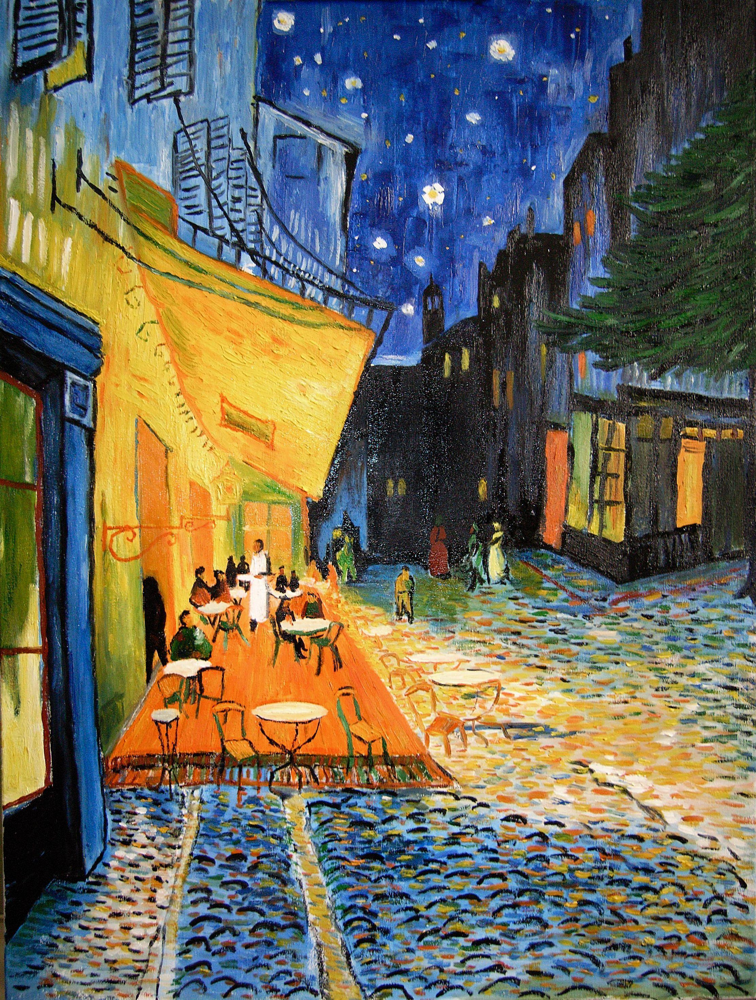

Descubra qual pintura do Van Gogh mais combina com você.
1. Qual palavra melhor descreve você?
2. Como você se sente em meio à natureza?
3. Qual cenário você prefere?
4. Qual atividade você acha mais relaxante?
A pintura que te representa é A Noite Estrelada ! Você possui uma personalidade corajosa e ousada, assim como as pinceladas fortes e inconfundíveis deste famoso quadro.

A pintura que te representa é O Terraço no Café à Noite ! Você possui uma personalidade acolhedora, harmoniosa e tranquila, assim como os sentimentos transmitidos por este belo quadro.
A pintura que te representa é Amendoeira em Flor ! Você aparenta ser calmo e equilibrado, prefere ficar mais na sua e em paz, e este quadro lhe cai bem por transmitir o mesmo sentimento de serenidade.
A pintura que te representa é O Quarto de Van Gogh em Arles ! Você possui uma personalidade criativa e sonhadora, e este quadro te representa por ilustrar o ambiente em que Van Gogh produziu, imaginou e criou algumas de suas obras, além de ser o seu lugar de descanso.
.png)